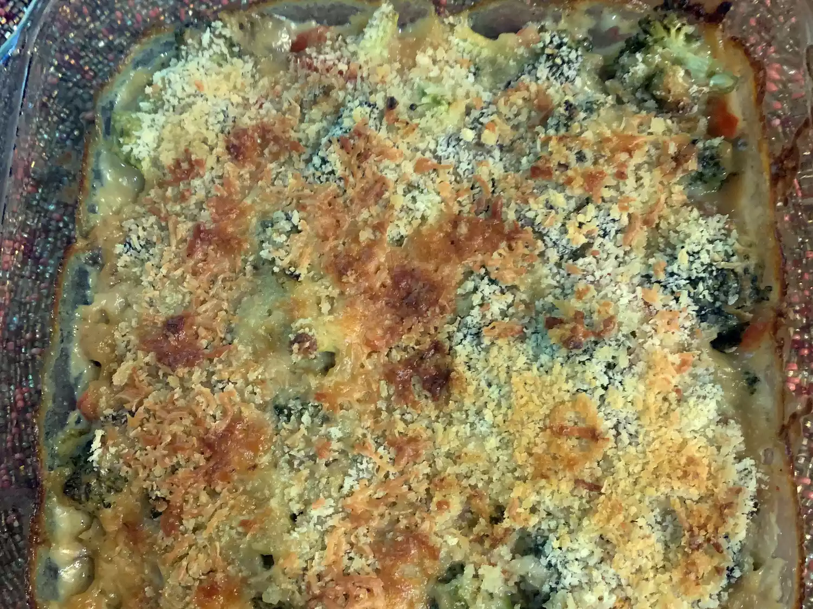

Broccoli Cheese Bake

Description
This broccoli bake is a great casserole I threw together one day when a friend requested broccoli au gratin for her birthday dinner. This is a great idea for those who aren't big fans of bread crumbs. The eggs can be taken out for a terrific sauce; skim milk and fat-free cheese also work well. It's a great recipe that can be easily altered according to taste. Enjoy!
Ingredients
- 8 cups fresh broccoli
- ½ cup butter
- 2 tablespoons all-purpose flour
- 1 small onion, chopped
Steps
- Preheat the oven to 325 degrees F (165 degrees C).
- Place broccoli in a steamer over 1 inch boiling water; cover. Cook until tender but still firm, 2 to 6 minutes. Drain.
- Mix in cheese and eggs until cheese is melted. Add broccoli and stir until combined. Transfer mixture to a 9x13-inch casserole dish.